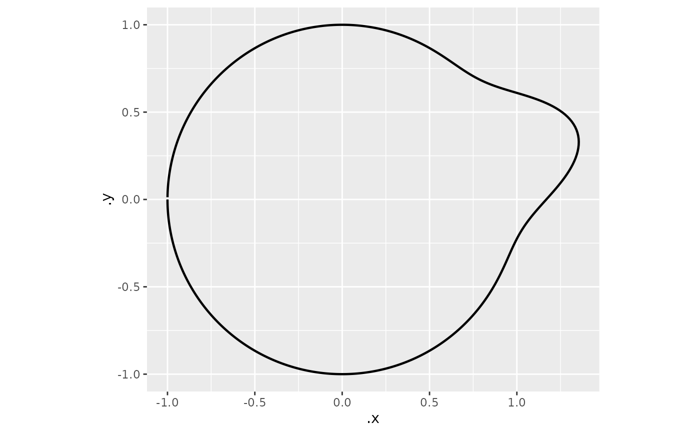
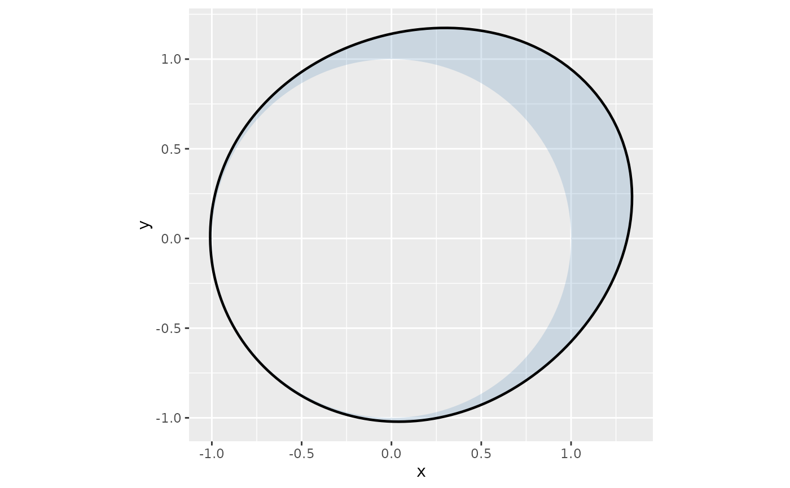

Wrap a pre-computed circular density around the unit circle
Source:R/circular_plotting.R
add_circular_density.RdTakes a data frame of `(theta, density)` pairs – from any source: MLE, kernel estimation, Bayesian posterior predictive, or hand-crafted – and renders it as a radial path (and optionally a filled polygon) around the unit circle boundary. At each angle theta the plotted radius is `1 + scale * density(theta) / max(density)`.
Usage
add_circular_density(
density_df,
theta_col = "theta",
density_col = "density",
colour_col = NULL,
scale = 0.4,
colour = "black",
fill = NA,
alpha = 0.2,
linewidth = 0.8,
ci_fill = "grey70",
ci_alpha = 0.3
)Arguments
- density_df
Data frame with columns named by `theta_col` and `density_col` (and, optionally, `colour_col`). Each row represents one evaluated angle.
- theta_col
Name of the angle column (radians, -pi to pi). Default `"theta"`.
- density_col
Name of the density/count column. Default `"density"`.
- colour_col
Optional grouping column. When set, separate paths are drawn per group, enabling ggplot2 faceting.
- scale
Maximum radial extension above the unit circle. Default `0.4` (peak at r = 1.4). Density is normalised within each group before scaling.
- colour
Fixed line colour used when `colour_col` is `NULL`. Default `"black"`.
- fill
Colour for the region between the unit circle and the density curve. `NA` (default) draws no fill.
- alpha
Alpha transparency for the filled polygon. Default `0.2`.
- linewidth
Width of the density path. Default `0.8`.
- ci_fill
Fill colour for the bootstrap confidence band. Only used when `density_df` contains `density_lower` and `density_upper` columns (produced by [compute_circular_density()] with `boot_reps > 0`, or supplied manually). Default `"grey70"`.
- ci_alpha
Alpha transparency for the confidence band polygon. Default `0.3`.
Value
A list of one, two, or three ggplot2 layers: optional CI band polygon, optional fill polygon between density and unit circle, and density path line.
Details
Because this function only handles rendering, it is agnostic to how the density was produced. To compute from raw headings use [compute_circular_density()] first, or call the convenience wrapper [add_heading_density()] which combines both steps.
Examples
library(ggplot2)
# From compute_circular_density:
hd <- data.frame(heading = c(0.2, 0.3, 0.4, 0.5, -0.1, 0.1, 0.6, 0.2))
dens_df <- compute_circular_density(hd)
ggplot() + coord_fixed() + add_circular_density(dens_df)

# From an external model (e.g. brms posterior predictive):
theta_grid <- seq(-pi, pi, length.out = 200)
external_dens <- data.frame(
theta = theta_grid,
density = exp(-2 * (1 - cos(theta_grid - 0.5))) # von Mises-like
)
ggplot() + coord_fixed() + add_circular_density(external_dens, fill = "steelblue")
